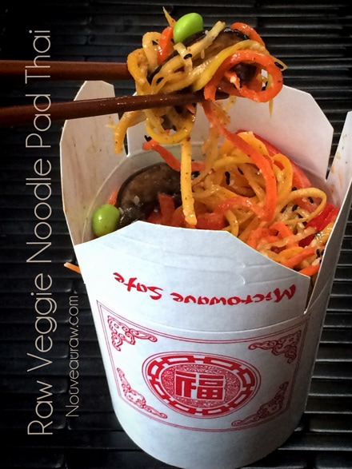
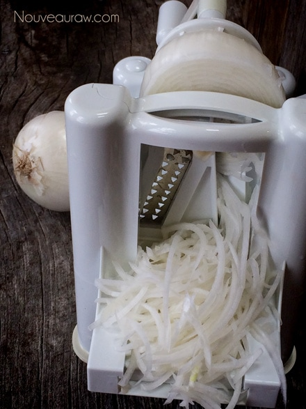

Veggie Noodle Pad Thai

~ raw, vegan, gluten-free ~
Pad Thai is a stir-fried rice noodle dish commonly served as a street food and at casual local eateries in Thailand. Well, here in Hood River at Oldfather Farms, Pad Thai is not stir-fried, veggie noodles are used in place of rice noodles and are enjoyed in the comfort of my home.
Though I could envision myself strolling down the street, taking in the beauty of the surrounding orchards, my take-out-container in hand with long veggies noodles being sucked up between puckered lips. But not before they wildly whip around and smack me in the back of the head. :)
In creating this dish, I spiralized many different root veggies; carrots, parsnips, rutabaga, butternut squash, and so forth. I felt like a kid holding up noodles that were almost as tall as I was… of course, Bob and Mom were growing impatient because this was their dinner. Bob turned to Mom and said, “I have to go through this with every meal. Lol”.
Veggie noodles are not only fun to make, but they are low in calories, full of nutrition and so easy. This is one of those great dishes to make with your kids.
Have a blessed day and noodle on!
 Ingredients:
Ingredients:
Serves 2
Spiraled veggie noodles:
- 1 cup carrots
- 1 cup rutabaga
- 1 cup parsnips
- 1 cup butternut squash
- 1 cup golden beet
- 1 red bell pepper, thin sliced
Marinated mushrooms:
- 2 cups thinly sliced mushrooms, caps only
- 2 Tbsp gluten-free tamari sauce
- 2 Tbsp olive oil
Sauce:
- 1/4 cup raw almond butter
- 2 Tbsp gluten-free tamari sauce
- 1 Tbsp Eden red wine vinegar or raw apple cider vinegar
- 1 Tbsp raw agave nectar
- 2 tsp organic chili sauce (Sriracha)
- 2 tsp toasted sesame oil
Add-ins:
- white and black sesame seeds
- Organic edamame (optional)
Preparation:
Spiraled noodles:
- Using a spiralizer, spiral enough of each veggie to make one cup of each. This will feed two, so feel free to increase the measurement if you are feeding more people.
- Place the noodles in a ziplock bag or low-sided glass dish (that will fit in the dehydrator). Toss with lemon juice and salt.
- Slide the veggies into the dehydrator and warm at 145 degrees (F) for 30 minutes or so. You can use 115 degrees (F) temp, but this will take longer. Warm until they start to soften.
Marinated mushrooms:
- Wash the mushrooms and remove the stems.
- Slice the mushroom caps into thin slivers.
- In a ziplock baggie or a glass bowl; toss with Tamari and oil. Slide the vessel into the dehydrator to marinate while the noodles are softening. I set the machine at 145 degrees and let them marinate for about 30 minutes or until soft. Concerned about the 145 degrees (F) temp? Read (here) for more information about it.
Sauce:
- In a 2 cup measuring cup, pour in the almond butter measuring out 1/4 cup.
- Add the Tamari, vinegar, agave, chili sauce, and oil. Whisk together and set aside until the veggies are ready. This will give the sauce time to meld together in flavors.
Assembly:
- After the noodles have softened, give them a quick in rinse with hot water to remove some the saltiness. Toss the noodles and sauce together until the noodles are well coated.
- Drain the mushrooms from the marinade liquid, toss in the noodles, add the edamame and sesame seeds.
- Serve and enjoy!
Spiralize all of the root veggies. Be sure to wash and peel them before using.
Golden Beets

Butternut Squash Noodles

Parsnip noodles

Carrot noodles

Rutabaga noodles

Yep, I even attempted to spiralize an onion. Lol Why not? :)

© AmieSue.com